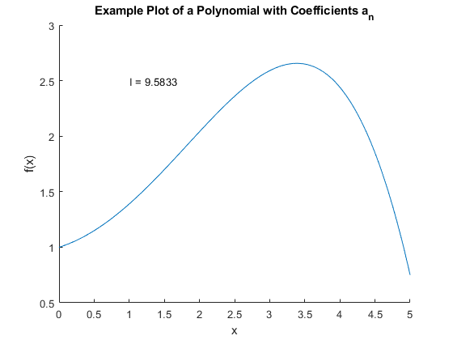
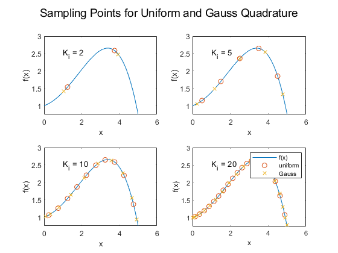
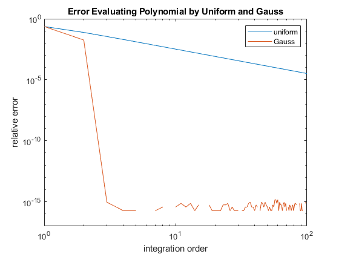
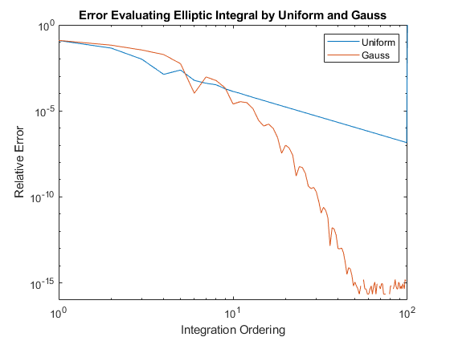

Contents
close all
clear
clc
Numerical Integration of One-Dimensional Integrals
an = [1 0.2 0.2 0 -0.01];
x = linspace(0 , 5 , 100);
I = 0;
fxk = I;
f = fxk;
for n = 1 : length(an)
I = I + (an(n)/n)*5^n;
f = f + an(n)*x.^(n-1);
end
io = I;
figure
hold on
plot(x , f)
title('Example Plot of a Polynomial with Coefficients a_n')
text(1 , 2.5 , 'I = 9.5833')
xlabel('x')
ylabel('f(x)')
hold off
p = 0;
for k1 = [2, 5, 10, 20]
dx = 5/k1;
[xw , i] = lgwt(k1 , 0 , 5);
for n = 1 : k1
xk(n) = (dx*n) - (dx/2);
end
fxk = 0;
fxw = 0;
for i = 1 : length(an)
fxk = fxk + an(i)*xk.^(i-1);
fxw = fxw + an(i)*xw.^(i-1);
end
figure(2)
p = p + 1;
subplot(2 , 2 , p)
plot(x , f)
hold on
scatter(xk,fxk,'o')
scatter(xw,fxw,'x')
xlim([0,6])
xlabel('x')
ylabel('f(x)')
txt = ["K_i = 2","K_i = 5","K_i = 10","K_i = 20"];
text(1,2.5,txt(p))
end
L = legend('f(x)','uniform','Gauss')
suptitle('Sampling Points for Uniform and Gauss Quadrature')
hold off
L =
Legend (f(x), uniform, Gauss) with properties:
String: {'f(x)' 'uniform' 'Gauss'}
Location: 'northeast'
Orientation: 'vertical'
FontSize: 8.1000
Position: [0.7354 0.3249 0.1568 0.1090]
Units: 'normalized'
Use GET to show all properties
 
Uniform Sampling
an = [1 0.2 0.2 0 -0.01];
x = linspace(0 , 5 , 100);
o = 1 : 100;
I = 0;
xk = 0;
dx = 0;
for y = 1 : 100
dx(y) = (5)/(o(y));
itj = 0;
for n = 1 : o(y)
xk(n) = 0.5*dx(y) + dx(y)*(n-1);
fxn = 0;
for g = 1 : length(an)
fxn = fxn +(an(g)*xk(n).^(g-1));
end
itj = itj + fxn*dx(y);
end
I(y) = itj;
polynInt(y) = (I(y) - io)./(io);
end
figure
loglog(o , polynInt)
hold on
for u = 1 : length(o)
fxn = 0;
sumIntg = 0;
[xi , wi] = lgwt(o(u), 0 , 5);
for a = 1 : length(xi)
fxn = 0;
for y = 1 : length(an)
fxn = fxn + (an(y)*xi(a).^(y-1));
end
sumIntg = sumIntg + fxn*wi(a);
end
sumIntg(u) = sumIntg;
error(u) = abs( (sumIntg(u) - io)/ io);
end
loglog (o , error)
xlim([1 , 100])
ylim ([10e-18 , 1])
title('Error Evaluating Polynomial by Uniform and Gauss')
xlabel('integration order')
ylabel('relative error')
legend('uniform','Gauss')
hold off

Convergence Analysis
kj = 0 : 100;
o = kj;
k = 0.8;
sumIq = 0*x;
for y = 1 : 101
iq = 0;
dX(y) = 5./kj(y);
for n = 1 : (kj(y))
xk(n) = 0.5.*dX(y) + dX(y).*(n - 1);
E = sqrt(1 - 0.64.*(sin(xk(n)).^2));
iq = iq + E*dX(y);
end
sumIq(y) = iq;
end
Iz = [sumIq 0];
for y = 1 : 101
elp(y) = abs((Iz(y + 1) - Iz(y)) / Iz(y));
end
total = elp(1 : length(elp) );
op = o( 1 : length(o) );
figure
loglog(op , total)
hold on
for j = 1 : length(kj)
Iy = 0;
[xi,wi] = lgwt(kj(j) , 0 , 5);
for n = 1 : length(xi)
E = sqrt(1 - k.^ 2.*(sin(xi(n)).^2));
Iy = Iy + E*wi(n);
end
sumIy(j) = Iy;
end
Ig2 = [sumIy 0];
for j = 1 : length(sumIy)
elp(j) = abs((Ig2(j+1) - Ig2(j))/Ig2(j));
end
elp = elp(1 : (length(elp)));
loglog(op,elp)
xlim([1 , 100])
ylim([10e-17 , 1])
title('Error Evaluating Elliptic Integral by Uniform and Gauss')
xlabel('Integration Ordering')
ylabel('Relative Error')
legend('Uniform','Gauss')
hold off
